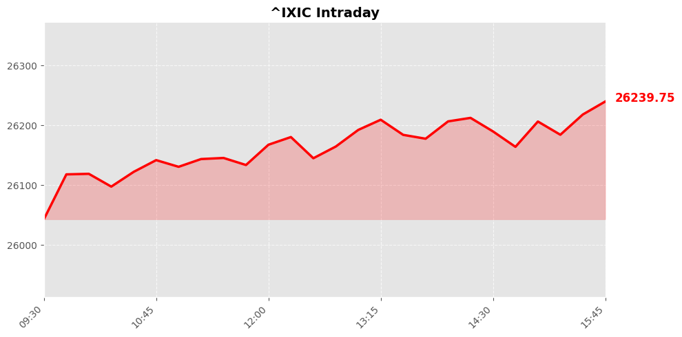

Daily Market Briefing
Market Overview



Market Analysis
The recent market performance reflects a positive momentum across major U.S. indices, with notable strength in the NASDAQ Composite, which surged by approximately 1.71%. This significant uptick suggests robust investor confidence, particularly in technology and growth-oriented sectors that dominate the NASDAQ. The index’s rise of over 440 points indicates strong enthusiasm, possibly driven by favorable earnings reports, technological innovations, or easing concerns about macroeconomic uncertainties.
In contrast, the Dow Jones Industrial Average experienced a marginal increase of just 12.19 points (+0.02%), signaling a more cautious or stable sentiment within traditional industrial and blue-chip sectors. The slight movement could reflect investor caution amid mixed economic signals or geopolitical developments, but overall, the Dow remains relatively steady.
The S&P 500, representing a broader market spectrum, posted a solid gain of approximately 0.84%, rising by nearly 62 points. This suggests a balanced optimism, with investors viewing the market as resilient amid ongoing macroeconomic challenges. The positive trend across all three indices indicates a generally bullish sentiment, likely fueled by easing inflation concerns, coordinated monetary policies, or encouraging economic data.
Overall, the market appears to be navigating through a phase of cautious optimism, with tech-driven growth leading the charge. While the Dow’s stability hints at underlying caution, broad investor confidence is evident from the S&P 500's substantial gains. Going forward, market participants will likely monitor macroeconomic indicators, corporate earnings, and geopolitical developments to gauge the sustainability of this upward trend.
Today's Headlines
News Analysis
今日市场关注要点
-
Inspire Brands宣布IPO准备
作为快餐行业的巨头，Inspire Brands（旗下拥有Dunkin'、Arby's、Buffalo Wild Wings、Baskin Robbins、Sonic Drive-In和Jimmy John's）秘密递交IPO申请，这可能预示其未来的资本市场动作和扩张计划。投资者应关注其估值和潜在的市场表现。 -
半导体与AI行业的“更替之战”
英特尔（Intel）和AMD股价大幅上涨，反映市场对CPU和内存芯片在下一阶段AI技术中的核心作用的乐观预期。而Nvidia的表现相对滞后，提示市场可能在重新评估不同AI硬件供应商的竞争格局。 -
苹果与英特尔芯片的可能合作
关于苹果公司可能收购英特尔芯片的消息引发关注。这一交易若成，或将对苹果的供应链布局和技术自主性产生深远影响，特别是在移动设备芯片供应方面。 -
国际地缘政治与经济数据的关注
本周市场焦点还集中在即将发布的重要经济数据、伊朗局势以及中美会谈。地缘政治紧张局势与宏观经济数据共同影响市场情绪，尤其是在当前美国股市火热的背景下。 -
能源局势与地缘冲突
美军对伊朗空油轮的空袭以及伊朗在波斯湾扣押油轮事件，加剧了市场对能源供应安全的担忧。卫星监测到的油污事件也反映出地区局势的复杂性。
潜在市场影响因素
- IPO动向与企业融资：Inspire Brands的IPO若成功，有望引领餐饮行业的资本运作热潮，可能带动相关板块估值上行。
- 半导体行业的结构性变化：英特尔和AMD的股价上涨显示市场对传统CPU厂商的信心增强，可能推动相关企业的估值修复，但也需警惕Nvidia的相对滞后是否预示行业格局的调整。
- 地缘政治紧张局势：伊朗与美国的军事行动及油轮事件，可能引发能源价格波动，影响能源股及相关大宗商品市场。
- 宏观经济数据与中美关系：即将公布的经济指标以及中美会谈结果，将直接影响市场的风险偏好和资金流向。
行业趋势值得关注
- AI硬件与芯片行业的结构性转变：随着英特尔和AMD的崛起，传统PC和服务器芯片市场正迎来新竞争格局。市场将持续关注新兴AI应用对硬件需求的推动作用。
- 餐饮与零售行业的资本市场活跃：Inspire Brands的IPO反映出消费行业的资本吸引力，或预示行业整合与扩张的加速。
- 能源地缘政治风险：中东局势持续紧张，可能引发油价波动，推动能源类股票和相关商品的市场表现。
- 国际关系与政策风险：中美关系、中东局势的变动将成为投资者评估风险的重要因素，可能影响全球资金布局。
整体而言，市场正处于多重因素交织的复杂局面中，投资者应密切关注行业领头羊的动态、国际局势变化，以及宏观经济数据的指引，合理调整投资策略以应对潜在的波动。
Economic Indicators
Inflation Indicators
Employment Indicators
Consumer Indicators
Community Hot Stocks
| Rank | Symbol | Mentions | Source |
|---|---|---|---|
| 1 | MU | 223 | |
| 2 | AMD | 131 | |
| 3 | RKLB | 127 | |
| 4 | SOFI | 101 | |
| 5 | PUMP | 100 | |
| 6 | SNDK | 91 | |
| 7 | HIT | 87 | |
| 8 | INTC | 82 | |
| 9 | MSFT | 65 | |
| 10 | BULL | 58 | |
| 11 | NVDA | 53 | |
| 12 | LOAN | 52 | |
| 13 | NET | 51 | |
| 14 | CARE | 45 | |
| 15 | SONY | 43 | |
| 16 | LUCK | 41 | |
| 17 | FACT | 40 | |
| 18 | TURN | 38 | |
| 19 | SAFE | 38 | |
| 20 | BEAT | 38 |
Market Outlook
The recent market performance indicates a cautiously optimistic outlook for the next 1-2 trading days. The NASDAQ Composite surged by approximately 1.71%, driven largely by strong gains in semiconductor stocks like Intel and AMD, amid a shifting AI landscape. This suggests investor confidence in the sector’s growth potential, especially as Intel and AMD outperform Nvidia, signaling a possible ‘changing of the guard’ in AI leadership.
Meanwhile, the Dow's modest movement (+0.02%) reflects a more subdued sentiment, possibly influenced by geopolitical concerns such as upcoming US-China discussions and Iran-related developments. The S&P 500's solid 0.84% rise underscores broad-based optimism, buoyed by positive earnings outlooks and potential strategic corporate moves, such as Inspire Brands’ confidential IPO filing, which could signal increased investor interest in consumer and service sectors.
Key risks to monitor include geopolitical tensions that may impact global markets, potential regulatory changes in the tech sector, and macroeconomic data releases that could influence investor sentiment. The market's recent pullbacks, as highlighted by analysts, present opportunities for strategic entry points, especially in undervalued stocks or sectors poised for recovery.
Investors should focus on sector-specific developments, especially in AI and semiconductors, alongside macroeconomic indicators and geopolitical events. Maintaining a balanced approach with attention to risk management will be crucial, as short-term volatility may persist amid ongoing global uncertainties. Overall, the market appears to be on a trajectory of cautious growth, with opportunities for gains tempered by geopolitical and macroeconomic risks.
Follow Us

Scan to follow StockGate
For more US stock market insights